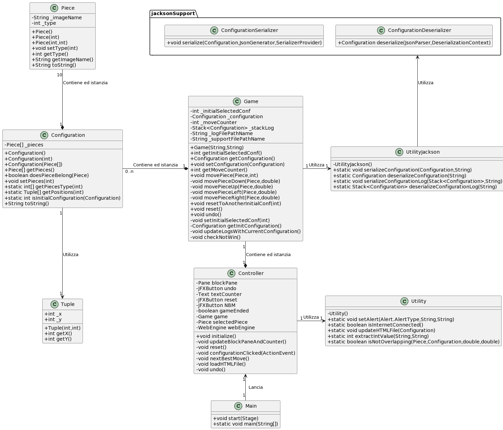

Manual
What's NONSENSE Generator?
NONSENSE Generator allows the creation of absurd sentences based on user-provided text input.
Once a sentence is entered, the system performs syntactic analysis to extract the main words and store them in an internal dictionary.
Using these words, the generator produces new sentences by randomly combining subjects, verbs, and complements, thus ensuring original and unpredictable outputs.
The generated sentences are then subjected to a toxicity check through integration with the Google Cloud APIs, to ensure safe and appropriate content.
The project also includes features such as regeneration, file saving, copy to clipboard, and interface reset, in order to offer a complete and interactive user experience.
Tecnologie utilizzate
| Nome | Versione | Descrizione |
|---|---|---|
| Java | 20 | Ambiente e linguaggio di programmazione utilizzato per sviluppare l’applicazione. |
| JavaFX | 20.0.1 | Piattaforma per lo sviluppo di applicazioni client, basata su Java. |
| JFoenix | 9.0.1 | Libreria Java open source che implementa Google Material Design utilizzando componenti Java. |
| Jackson | 2.12.3 | Libreria Java per la serializzazione di oggetti Java in oggetti JSON e viceversa. |
| JUnit | 5.9.1 | Framework per il testing automatico di classi Java. |
| SceneBuilder | 19.0.0 | Software per la costruzione di una GUI JavaFX tramite "drag and drop". |
Si consiglia, alla fine, di consultare anche il Javadoc allegato per capire al meglio l'integrazione delle librerie.
Descrizione del progetto e implementazione delle specifiche
Nelle prime fasi di sviluppo del progetto sono state discusse e approfondite le specifiche, con l’idea di affrontare le fasi di progettazione e di sviluppo più linearmente possibile.
Dopo aver portato a termine la fase di definizione delle specifiche e di design (le quali "deliverables" sono allegate nelle sezioni successive) è stato avviato lo sviluppo vero e proprio dell’applicazione.
L’idea principale, che è alla base della realizzazione delle funzionalità del software, è stata quella di utilizzare il concetto di “configurazione”, rappresentante l’insieme dei pezzi che compongono il puzzle e le loro posizioni in un determinato momento (o mossa).
Interfaccia grafica e spostamento dei blocchi
Per realizzare la GUI sono stati utilizzati la libreria grafica di JavaFX e il
software SceneBuilder per una disposizione più agevole degli elementi grafici e per la successiva
generazione
del file .fxml, il quale codifica l’interfaccia tramite il linguaggio di markup di JavaFX.
I blocchi sono stati implementati tramite l’estensione del componente Rectangle di JavaFX,
così da poter gestire la
logica dello spostamento di questi ultimi - evitando, per esempio, che si sovrapponessero, o facendo in
modo che
restassero nei limiti del piano di gioco - semplicemente prelevando le informazioni dagli attributi
forniti
direttamente dalla libreria.
Per completare l’interfaccia sono stati aggiunti dei bottoni, selezionati tra i componenti JFoenix. A ciascun bottone è stata associata una funzionalità, ognuna delle quali è stata implementata tramite una logica innescata da eventi scatenati dall’utente compiendo determinate azioni sulla GUI.
Possibilità di salvare lo stato corrente e di ripristinarlo
Questa funzionalità è strettamente collegata alle altre. Per memorizzare lo stato corrente e permettere il suo ripristino una volta chiusa e riaperta l’applicazione, si è pensato di tenere traccia, tramite uno "stack", delle varie configurazioni generate ogni volta che un singolo blocco viene spostato. La memorizzazione di questo storico avviene su file JSON, il quale si aggiorna ad ogni mossa. Per gestire la scrittura e la lettura su file è stata utilizzata la libreria Jackson.
Scegliere fra diverse configurazioni di partenza
Ad alcuni bottoni è stata associata la funzionalità di cambio configurazione. Le configurazioni
iniziali selezionabili sono memorizzate all’interno del codice.
Notare che il cambio di configurazione comporta un reset dello storico.
Resettare la partita
Tramite l’apposito bottone, è possibile resettare la partita visualizzando la configurazione dalla quale si era iniziato a giocare.
Tornare indietro di una mossa
Tramite l’apposito bottone, è possibile tornare indietro di una mossa; questa operazione è implementata tramite l’eliminazione dell’ultima configurazione dallo storico e la visualizzazione della penultima.
Next best move
Tramite l’apposito bottone, è possibile fare eseguire al gioco la miglior mossa possibile partendo dallo stato in cui si trova la partita quando la NBM viene richiesta. La logica che permette di usufruire di questa funzionalità è implementata da un sistema esterno (link allo script). La connessione fra quest'ultimo e il software è stata creata tramite due classi di JavaFX: WebView, per “mappare” il contenuto di una pagina web, e WebEngine, per modificare una pagina web tramite WebView. Con questa infrastruttura è stato possibile interrogare il sistema esterno ed elaborare la sua risposta. La configurazione risultante viene memorizzata nello storico come mossa.
Counter delle mosse effettuate
E’ previsto un "counter" per il conteggio delle mosse di una partita, il quale corrisponde alla dimensione dello storico senza tenere conto della configurazione iniziale (segue questa logica per tutte le altre funzionalità).
Al termine dello sviluppo, è stato svolto un refactoring del codice per permettere un testing efficiente e rigoroso, anche tramite JUnit (le "deliverables" relative al testing sono disponibili nelle sezioni successive).
Scaricare ed installare il software
Jar
Per scaricare il programma in formato .jar, cliccare sul bottone Windows o macOS:
Una volta terminato il download del file .zip, estrarne il contenuto in una locazione a
piacere all’interno
del proprio dispositivo. Sarà presente una directory contenente una cartella e un file:
-
/klotski_files, nella quale sono contenuti i file necessari per il salvataggio delle partite
e la richiesta della NBM. È stato scelto di allocarli esternamente poiché non era possibile renderizzarli
ed utilizzarli all’interno del file
.jar. -
klotski.jar, l'applicazione.
Per avviare l’applicazione, fare doppio click sul file klotski.jar. L’esecuzione in
questa modalità del programma è possibile previa installazione del JRE.
Nota: macOS
Se, nel tentativo di eseguire il file .jar appare l'avviso 'Impossibile aprire “klotski.jar” perché proviene da uno sviluppatore non identificato', è possibile eseguirlo ugualmente tramite: Tasto destro > Apri > Apri
IDE
Nel caso ci siano problemi con la precedente modalità d'installazione, si consiglia di clonare la
repository
presente al link in alto a destra, aprire il progetto scaricato tramite un IDE (ad esempio
IntelliJ) ed eseguire il
file Main.java presente al seguente percorso:
src/main/java/com/klotski/app/Main.java
Per l’esecuzione è necessaria l'installazione della jdk (preferibilmente versione 20).
Come giocare
Design Patterns
Controller
Low Coupling
Pure Fabrication
Specifiche

| Use Case 1 | |
|---|---|
| Use Case Name | Enter Initial Sentence |
| Actors | User |
| Description | Il giocatore deve visualizzare a video la configurazione corrente. |
| Preconditions | - |
| Scenario Principale | Viene mostrata al giocatore l'ultima configurazione presente nello storico. |
| Scenario Alternativo | - |
| Post-Condizioni | - |
| Note | - |
Design
Domain Model

Design Class Model
Sequence Diagrams
System Sequence Diagram

Internal Sequence Diagrams
muovi(pezzo, keyCode)
La sequenza numerata all'interno dei costrutti alt non è da intendersi come rigorosa,
in quanto vengono eseguiti alternativamente, ma è indicativa.
")
cambia_configurazione(configurazione_alternativa)
La sequenza numerata all'interno dei costrutti alt non è da intendersi come rigorosa,
in quanto vengono eseguiti alternativamente, ma è indicativa.
")
undo()
La sequenza numerata all'interno dei costrutti alt non è da intendersi come rigorosa,
in quanto vengono eseguiti alternativamente, ma è indicativa.
")
reset()
")
richiedi_NBM()
La sequenza numerata all'interno dei costrutti alt non è da intendersi come rigorosa,
in quanto vengono eseguiti alternativamente, ma è indicativa.
Test
Unit Tests Results
Clicca per vedere i risultati degli Unit Tests
System Tests
Clicca per vedere i System Tests
JavaDoc
Clicca per vedere il JavaDoc